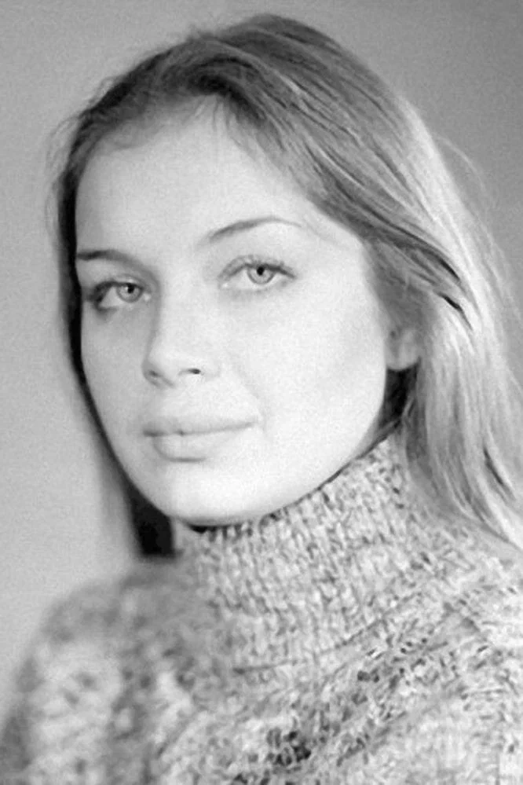

Глеб Владимирович Алексушин
Российский учёный-историк, преподаватель истории, журналист, экскурсовод, краевед, специалист по ряду вспомогательных исторических дисциплин, доктор исторических наук.
Валентина Воилкова
Cоветская актриса театра и кино. Родилась 12 апреля 1958 года в Куйбышеве. Училась в школе № 167 в Куйбышеве. Окончила ГИТИС, с 1979 года играла в Центральном академическом театре Советской армии.
Арсен Норайрович Захарян
Арсен Норайрович Захарян (родился 26 мая 2003 года, Самара) — российский футболист, полузащитник московского клуба «Динамо» и сборной России. Арсен родился в Самаре. Его отец, Норайр, работал в строительной сфере